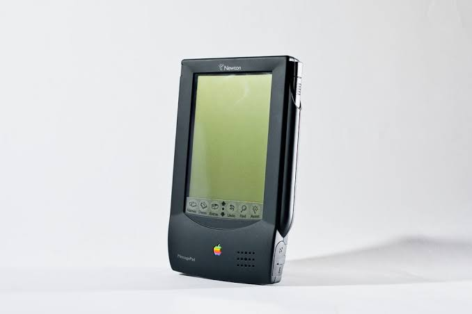
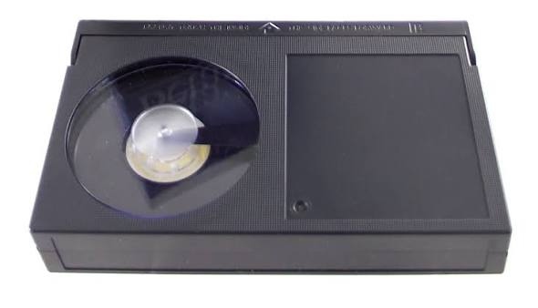
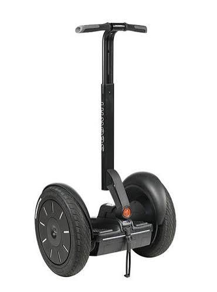

Not every great idea becomes a great invention! Discover three inventions that struggled to succeed and learn how later innovations improved on their ideas.
Explore the Exhibits
Year: 1993
Apple Newton was a handheld computer designed to store notes, contacts and calendars. Users could write on its screen using a stylus.
Its handwriting recognition often made mistakes, and the device was expensive for many consumers.
The PalmPilot offered a simpler method of entering text. Later smartphones combined portable computing with improved touchscreens and software.

Year: 1975
Sony introduced Betamax, a video cassette format that allowed people to record television programmes and watch them later.
Early Betamax recordings were shorter than many consumers wanted. The competing VHS format offered longer recording times and became more popular.
VHS became the leading home video cassette format. Later, DVDs and digital streaming made watching and storing films more convenient.

Year: 2001
The Segway was a self-balancing electric vehicle designed to change how people travelled short distances.
Its high price, weight and restrictions on where it could be used made it less practical for everyday travel than many people expected.
Electric bicycles and electric scooters provided alternative ways to travel short distances. They expanded the choices available for personal electric transport.
This museum explores inventions that struggled to succeed and the lessons they taught us.
Every failure can inspire a better idea. Innovation is a journey of learning, experimenting and improving.